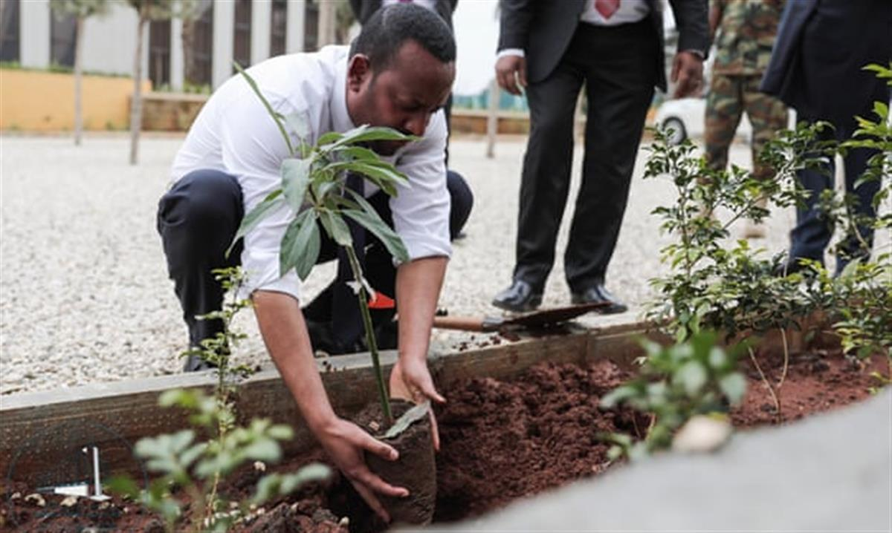
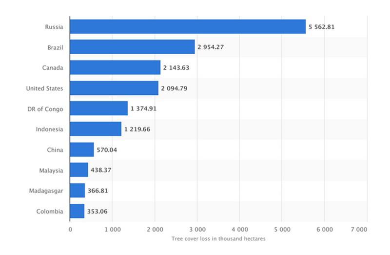
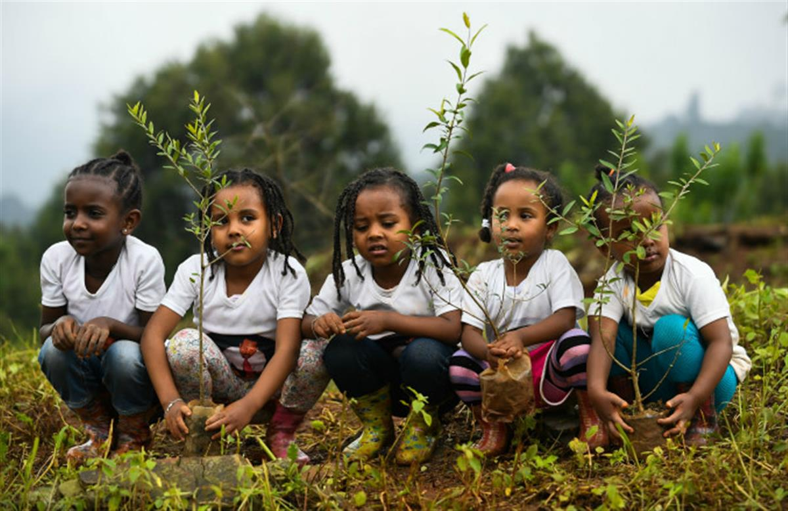

The efforts far surpassed the original target of planting 200 million seedlings in a day. Image: REUTERS/Regis Duvignau
The efforts far surpassed the original target of planting 200 million seedlings in a day. Image: REUTERS/Regis Duvignau
31 Jul 2019
Johnny Wood Writer, Formative Content
Ethiopia has planted more than 350 million trees in 12 hours, its government announced, claiming a world record.
Across the country, volunteers took part in the mass planting as part of the “Green Legacy” initiative, a programme that aims to reforest large swathes of the land.
The efforts far surpassed an original target of planting 200 million seedlings in a day. Ethiopia believes its achievement exceeds the previous world record set by India in 2017, when volunteers planted 66 million trees in 12 hours.
Launched by Prime Minister Abiy Ahmed, Ethiopia’s national reforestation programme has an ambitious target of planting 4 billion trees by the end of the rainy season in October. Which means planting 40 seedlings for every person in the country.

Millions of Ethiopians were invited to take part in the tree-planting challenge. Image: Embassy of Ethiopia, BrusselsPlant life
Ethiopia’s Ministry of Agriculture has said 2.6 billion new trees – more than half of the target – are already in the ground.
The aim is to reverse decades of deforestation when logging, land clearances and poorly defined property rights led to a dramatic decline in forest cover. According to research by Farm Africa, an organization working to restore the forests of East Africa, Ethiopia’s forested land was reduced from almost a third of the country at the turn of the 20th century, to less than 4% today.
Research published in the Nature journal estimates that 15 billion trees are cut down each year, fuelling global warming.
Image: Statista

WWF research shows deforestation is responsible for more than 15% of global greenhouse gases. Carbon extracted from the atmosphere by forests is stored in the branches and trunks of trees. Once these are cut and burned, the stored carbon is released back into the air.
The effects of climate change have hit Ethiopia’s largely agrarian population hard. Over-farming has caused land degradation and soil erosion, while warming temperatures leave farmers facing a constant threat of extreme weather events such as droughts and flooding.

SOURCE: WORLD ECONOMIC FORUM